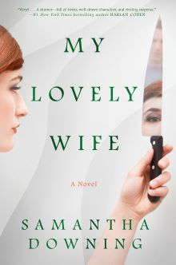
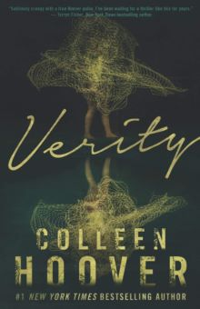
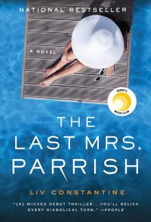

Mystery and Thriller
My Lovely Wife
While this book was a fun ride and I devoured it in 3 days, the twist has been done before. Maybe once you have read as many thrillers as I have, no twist feels new anymore. It feels like there should be the online hype about the ending in the same way that there is for Verity. However, Verity did it first.

| |
 |
Verity
Verity is one of the most talked about books on the blogs. The pace is incredible. The characters are oh so hateable. I cannot say it does not still haunt me. These are all the signs of an excellent novel. However, one of my triggers as a new mom is child death. This one takes it a bit too far.
|
 |
The Last Mrs. Parish
The modern trope in mystery is to hate your protagonist. This book puts a little twist on that. Good for her, I say! I keep thinking about this one even though I haven't read it in 2 years!

|
 |
When No One Is Watching
I really wanted to love this book, but it felt like a knock off of Get Out. The ending gets a little too wild for me. These issues are concerning enough that they did not need some of the more outlandish elements. It was unclear to me how they even arrived at the ending. It seemed very "Dallas" to me. This concept deserved better. Alyssa Cole generally writes romance and it felt like she just missed writing romance for a chapter and the *steamy* scene appeared out of nowhere. It did not really fit in with the plot. However, I did want to finish it. It wasn't the best thriller I have ever read but it wasn't the worst.
|
 |
Home > Mystery and Thriller